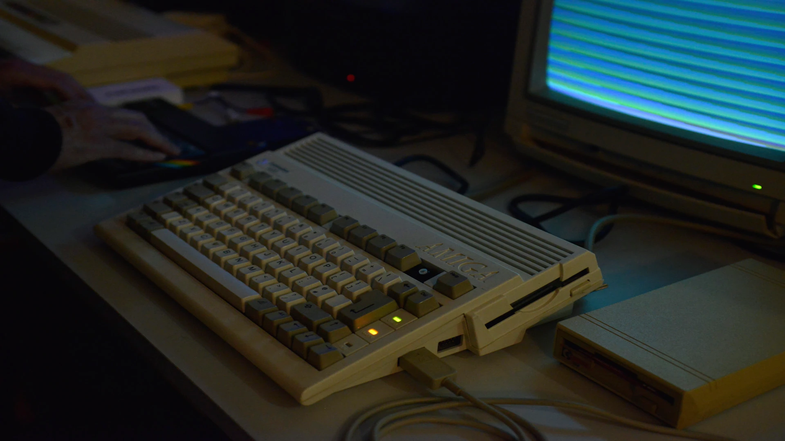
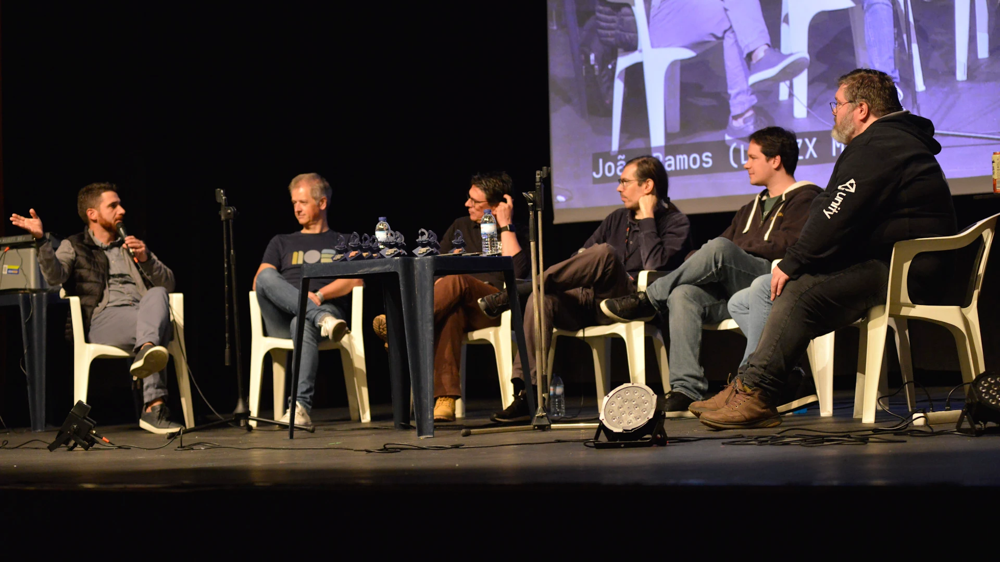

Festival de Arte Digital, Portugal, 6-8 Dezembro 2024
Mostra-nos o que
tens feito!
Fonte: Jaerder Sousa
Local
Salão de Festas Incrível Almadense
No coração de Almada, com espaço para mais de 120 visitantes.
Esta sala centenária estará equipada com mesas, cadeiras, luzes, projecção full HD e sistema de som adequado para mostrar ao mundo os teus trabalhos de arte digital.
Participa!
Mostras & Competições
Crias arte com computadores? Queremos-te ver a apresentá-la ao público na Inércia! Temos
vários modos de participação:
- Competição de Demos, o formato clássico da demoscene onde o voto do público determina o
vencedor.
- Mostras de projectos, sessões especiais para apresentar as tuas obras digitais originais
sem escrutínio de votação do público.
- Programação ao vivo, sessões de programação gráfica à vista de todos.
- Seminários e instalações, estamos abertos a acolher as tuas propostas.
"This Is Internet" by teadrinker
-
 Fonte: Jaerder Sousa
Canto Retro
Descobre o nosso canto retro, repleto de máquinas vintage onde podes aprender mais sobre as máquinas que tiveste (ou nunca tiveste) quando eras mais pequeno. Ver demonstrações do que elas são capazes, jogar alguns jogos e falar com pessoas que te conseguem ajudar a restaurar e dar nova vida às tuas máquinas antigas.
-

Fonte: Jaerder Sousa
Shader Royale
Experiência ao vivo o evento de programação gráfica shader com o record do maior número de participantes simultaneos ligados dos quatro cantos do mundo. Organizado pelo quarto ano consecutivo na Inércia.
-
 Fonte: Jaerder Sousa
Seminários
Participa nas diversas apresentações, mesas redondas e workshops que estamos a organizar durante o evento. Cobrindo uma diversidade de tópicos ligados à demoscene, movimento maker, fabricação digital e os vários tipos de arte digital.
"EN-TROPY - Inércia 2024 Invite" por ASD + ma + ENR
Convite
EN-TROPY
O convite oficial para a Inércia 2024 em formato executável foi desenvolvido em colaboração entre os Andromeda Software Development, minimalartifact e Enough Records.
Foi estreada em Berlin, na Alemanha de 4 a 6 de Outubro onde obteve o segundo lugar na competição de demos da Deadline 2024.
Podes fazer a descarga gratuita através da página da scene.org e executar no teu próprio computador, se tiveres sistema operativo Windows e uma placa gráfica moderna.
"Glitch / Art / Error / Creativity is born from chaos / love / life.
Come / Sing / Share
/ Join the moment at Inércia 2024!"
Bilhetes
Também se encontram disponíveis outras opções de desconto ou apoiante do evento.